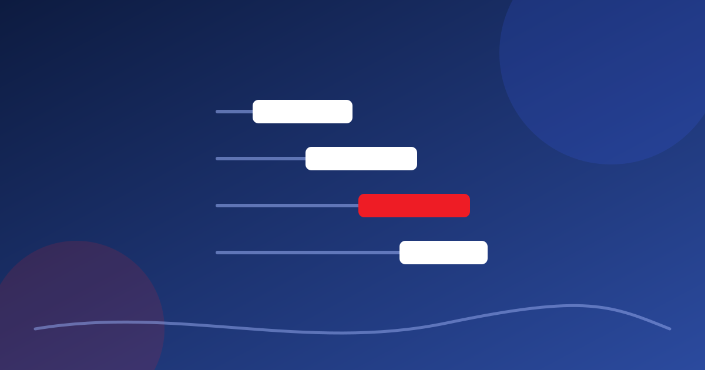

Poucos livros de gestão têm uma sigla tão conhecida quanto PMBOK, de Project Management Body of Knowledge, algo como “corpo de conhecimento em gerenciamento de projetos”. É o guia do PMI, o Instituto de Gerenciamento de Projetos, e soa como coisa de obra e de software. Mas o raciocínio dele é bem mais próximo da produção cultural do que parece.

A descrição parte da 4ª e da 5ª edições do guia, e os grupos e áreas abaixo são os da 5ª. Edições mais recentes dão mais atenção a princípios e abordagens adaptativas, mas o raciocínio básico segue útil.
De onde vem o PMI
O PMI foi fundado em 1969 para responder à falta de uma metodologia própria para conduzir projetos. Voluntários reuniram conhecimento, a instituição se espalhou em capítulos regionais e passou a certificar profissionais, como o PMP, Profissional de Gerenciamento de Projetos. Segundo Vargas, o gerenciamento de projetos não propõe revolução nenhuma: só estrutura o jeito de lidar com situações marcadas pela novidade, pela complexidade e pela dinâmica do ambiente.
Cinco grupos de processos (5ª edição)
Processo, no vocabulário do guia, é uma série de ações que gera um resultado. A 5ª edição organiza os processos em cinco grupos, que se repetem e se ajustam no ciclo de planejar, executar, verificar e agir, o PDCA.
1. Iniciação: a ideia vira projeto
É o reconhecimento formal de que o projeto existe. O documento central é o termo de abertura, que na prática do produtor é a versão curta do projeto: público, prazos gerais, custo esperado e responsável.
Exemplo fictício. Uma página dizendo: festival de música de rua em três bairros, em outubro, para 5 mil pessoas, orçamento previsto de R$ 180.000, com um patrocinador e a prefeitura como apoio.
2. Planejamento: o grupo com mais ferramentas
Aqui se documenta o necessário para tocar o projeto. A literatura da área aponta como benefícios determinar objetivos, reduzir incertezas, melhorar a eficiência e antecipar problemas. O produto do grupo é o plano de gerenciamento, que define papéis, responsabilidades e autoridades. Dividir o projeto em fases cria pontos de checagem: dá para corrigir a rota a tempo, em vez de descobrir o problema quando já é irreversível. As ferramentas aparecem na tabela mais abaixo.
3. Execução: a produção executiva
Este grupo corresponde à produção executiva: acompanhar as atividades, decidir caminhos corretivos e manter o plano atualizado. Há a técnica de compressão, que coloca mais gente ou material para ganhar prazo, e que às vezes vale a pena porque libera estruturas de custo fixo mais cedo. Cabe ao produtor calcular o ponto ótimo.
4. Monitoramento e controle: o olho que acompanha
Mede o desempenho e corrige a rota no tempo certo. O ponto delicado é o controle de mudanças: quando a ideia muda, é preciso ver o impacto em escopo, prazo e custo. Registrar os pedidos de alteração é também uma chance de renegociar com as partes. Aqui entram ainda os relatórios de andamento para o patrocinador e o acompanhamento da equipe e dos interessados.
5. Encerramento: pós-produção
Receber entregas, encerrar contratos, pagar o que falta, documentar tudo e registrar as lições aprendidas, que são o ponto de partida do próximo projeto. Na cultura, é a pós-produção, onde se faz a prestação de contas.
Dez áreas de conhecimento (5ª edição)
Os grupos são o “quando”. As áreas são o “sobre o quê”, e atravessam todas as fases: integração, escopo, tempo, custo, qualidade, recursos humanos, comunicações, riscos, aquisições e partes interessadas.
Duas merecem comentário. Em comunicações, costuma-se dizer que o gerente de projetos passa cerca de 90% do tempo comunicando, e que a maior parte dos problemas nasce aí. Em eventos, o plano de comunicação vai além da assessoria de imprensa: inclui patrocinadores, autoridades, fornecedores e equipe. Em riscos, a matriz é simples: para cada risco, probabilidade, dano ao projeto e a resposta: transferir, aceitar, mitigar ou desprezar.
Ferramentas do planejamento, para que servem
| Ferramenta | Para que serve numa produção |
|---|---|
| Escopo | Diz o que está dentro e fora: local, data, atrações, público, equipamentos, critérios de qualidade |
| EAP (Estrutura Analítica do Projeto) | Árvore que quebra o projeto em entregas gerenciáveis e organiza reuniões de equipe |
| Cronograma | Atividades com responsável, duração e dependências, e pontos de checagem entre fases |
| Orçamento | Custos fixos e variáveis, considerando riscos, tributos e oscilações do mercado |
| Matriz de riscos | Lista o que pode dar errado, a probabilidade, o dano e a resposta |
| Plano de comunicação | Define quem precisa saber o quê, quando e por qual canal |
| Planilha de aquisições | Fornecedores com item, preço, prazo, pagamento, qualidade e contato |
Um exemplo de ponta a ponta
Tome o festival fictício de música de rua em três bairros. Na iniciação, a página de uma folha convence o patrocinador. No planejamento, a EAP separa palco, som, segurança, divulgação e prestação de contas, e cada caixa ganha um nome responsável. Na execução, o produtor executivo vê que o som atrasou dois dias e decide se comprime a montagem ou muda a ordem das atrações. No controle, a troca de um dos bairros vira pedido de alteração, com impacto calculado em custo e prazo. No encerramento, a equipe prepara a pós-produção e anota o que faria diferente. A ferramenta é a mesma de uma obra, mas o uso é de quem faz festival.
Onde o guia tropeça na cultura
Thiry-Cherques lembra que técnicas muito sofisticadas e caras raramente cabem em orçamento enxuto, e que a saída é a versão leve das ferramentas. O guia ordena escopo, tempo e custo, mas tende a negligenciar a dimensão biopsicossocial do trabalho criativo, o desgaste de técnicos e artistas. É onde a ergonomia para quem faz o show complementa.
Kit mínimo: o que fazer amanhã
Quem nunca usou nada disso não precisa começar por tudo. Como opinião, cinco folhas já são planejamento de verdade, do tipo que uma comissão de edital reconhece:
- Termo de abertura de uma página, com objetivo, público, data, orçamento e responsáveis.
- EAP de dois ou três níveis, na parede da reunião.
- Cronograma com responsável e dependências, em planilha mesmo.
- Matriz de riscos com dez linhas.
- Folha de lições aprendidas, preenchida em 30 minutos no fim.
Se a ideia de usar tudo isso assusta, comece só pela matriz de riscos e pela EAP. Elas rendem mais do que parece, e as outras folhas entram quando a equipe pedir. A mesma lógica, pensada para eventos, está no EMBOK.
ProduPlay · Produção cultural com método e linguagem clara.